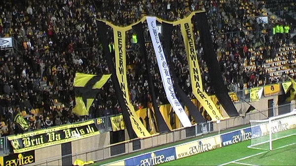
Een sfeer-doek op west refereert aan de bekerzeges van 1997 en 2000.
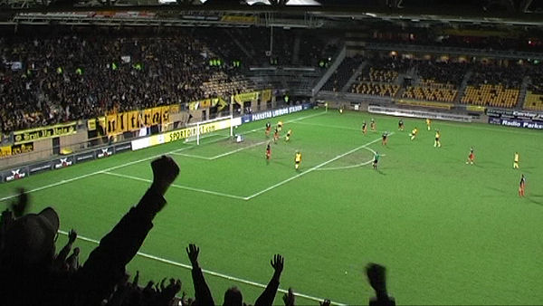
Het is al gauw feest in het PLS als Janssen op aangeven van Tioté scoort:
1-0, (2').
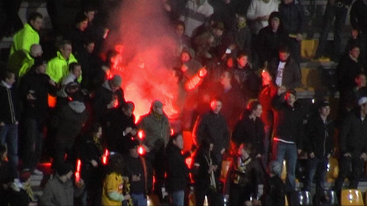
Wordt dit een traditie?
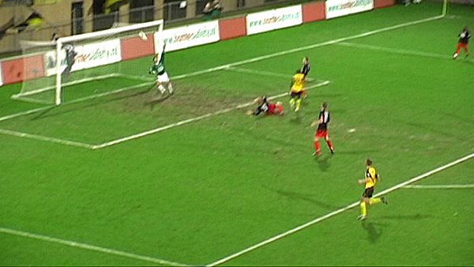
Bijna weer een doelpunt als een poeier van Lamah via de lat terug
caramboleert.
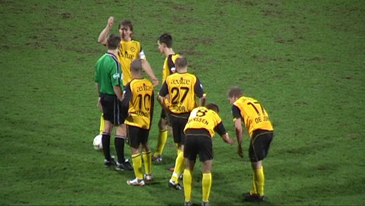
Roda is veel sterker en krijgt een behoorlijk aantal kansen maar voetbalt
niet zuiver genoeg. Bij de
voorbereiding van een vrije trap genomen door Hadouir zien we Meeuwis een
gebaar maken dat hem niet
siert.
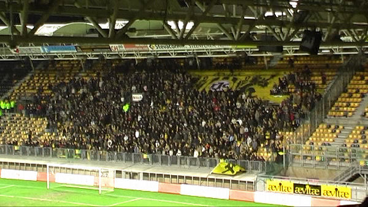
Ook in deze slapbezochte bekerwedstrijd verplaatsten de westsiders zich na
de rust naar de oosttribune.
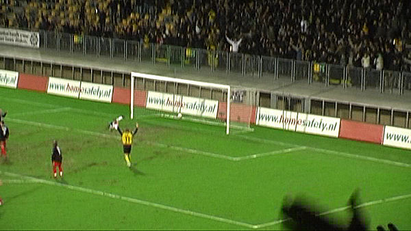
De Jong passeert Graafland met een afstandschot: 2-0, (64').
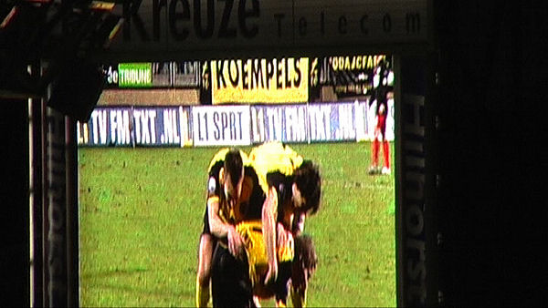
Altijd leuk om dergelijke momenten nog eens via het video-scherm terug te
zien.
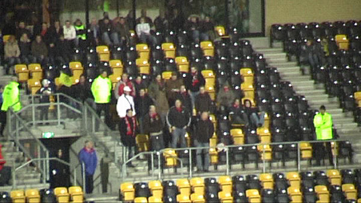
De ongeveer dertig meegereisde Excelsior-supporters stonden op noord.
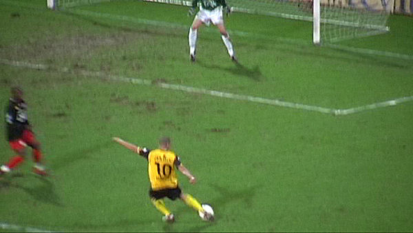
Mooi schot van Hadouir...
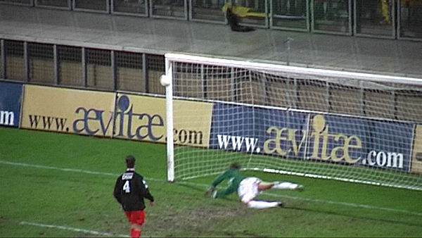
... wordt teruggestuurd door de buitenkant van de paal.
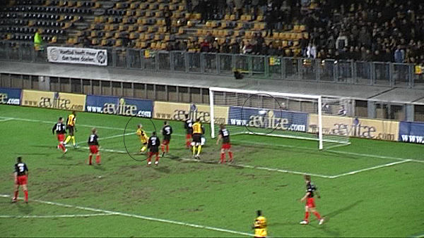
Hadouir jaagt de bal in het dak van de goal: 3-0, (86').
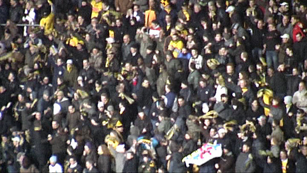
Feest bij de 5.000 supporters.
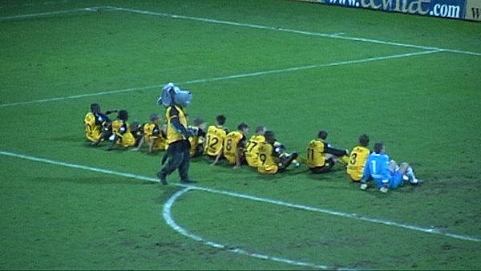
Humba. De domme Roda-kielf loopt zoals gebruikelijk in de weg.
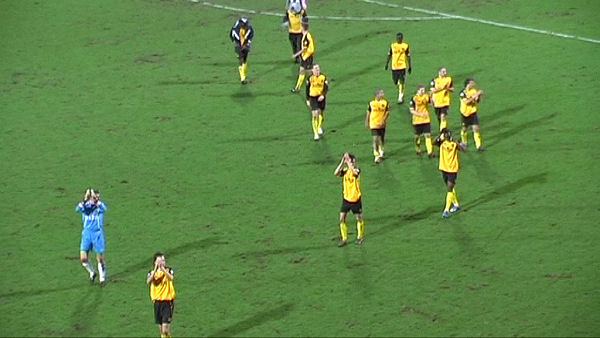
Obligaat dank-je aan zuid en aan het restantje supporters op west. De
kwartfinales zijn bereikt!
Foto's van onze gasten:
excelsiorforlife.nl